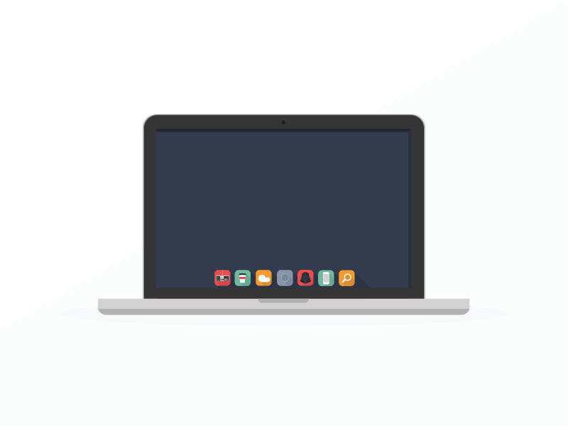

COMPÉTENCES
Compétences en cours d’acquisition
Dans le cadre de ma formation BTS SIO option SLAM, je développe progressivement différentes compétences liées au développement web, à la programmation, à la modélisation et aux technologies informatiques.

Développement Web
HTML, CSS, découverte du JavaScript et conception d’interfaces web.
J’ai commencé à développer mes compétences en HTML et CSS à travers la création de mon portfolio. J’ai appris à structurer une page web, organiser une navigation, créer des sections, utiliser des cartes et appliquer un style visuel cohérent. J’ai également découvert JavaScript avec l’ajout de boutons interactifs permettant d’afficher ou de masquer du contenu.

Programmation
Apprentissage du Python, algorithmique et logique de développement.
Dans le cadre de ma formation, je développe progressivement ma logique de programmation à travers l’algorithmique, Python et C#. J’apprends à utiliser des variables, des conditions, des boucles, des fonctions et à comprendre la logique d’un programme. L’atelier MediaTek86 m’a aussi permis de pratiquer la programmation événementielle avec Windows Forms.
Conception UML
Découverte des diagrammes UML, modélisation et analyse applicative.
La conception UML me permet de mieux comprendre la structure d’une application avant son développement. J’ai découvert les diagrammes de cas d’utilisation, les diagrammes de classes et la modélisation des besoins. Cette compétence m’aide à organiser les idées, identifier les acteurs, les fonctionnalités et les relations entre les éléments d’un projet.

Outils et environnement
Utilisation de PyCharm, GitHub, draw.io et outils de développement.
J’utilise plusieurs outils dans le cadre de ma formation : PyCharm pour le développement web, Visual Studio pour les applications C#, WampServer et phpMyAdmin pour les bases de données MySQL, GitHub pour sauvegarder mes projets, ainsi que draw.io et Looping pour la modélisation. Ces outils m’aident à travailler de manière plus organisée et professionnelle.